SSM Soybean Model
R implementation — Technical Documentation | Based on Soltani & Sinclair (2012), Modeling Physiology of Crop Development, Growth and Yield
The SSM (Simple Simulation Model) Soybean model is a process-based, daily time-step crop simulation model for soybean (Glycine max). It was originally developed in Excel/VBA and has been fully reimplemented in R for this project. The R implementation reproduces the VBA reference to within floating-point precision across all 7 200 simulation years.
Input / Output summary
| Input category | Variables | Source |
|---|---|---|
| Weather | TMIN, TMAX, SRAD, RAIN (daily) | Excel weather files per location |
| Soil | 10-layer: SAT, DUL, CLL, ADRY, DLYER, DRAINF | soil_data.json |
| Crop | ~60 genetic parameters per cultivar | scenarios.csv (Crop sheet columns) |
| Management | Sowing DOY, plant density, irrigation mode, IRGLVL | scenarios.csv (Manag sheet) |
| Climate | CO₂ concentration, temperature/precipitation offsets | scenarios.csv |
| Output category | Variables | Frequency |
| Phenology | dtEMR, dtR1, dtR3, dtR5, dtR7, dtR8 (days to each stage) | Annual summary |
| Biomass | WTOP, WGRN, MXLAI, HI, Ywet | Annual summary |
| Water balance | CE, CTR, CRAIN, CIRGW, IRGNO, CDRAIN, CRUNOF, IPASW, ATSWSL | Annual summary |
| Daily | All state variables (LAI, CBD, FTSWRZ, SEVP, TR, …) | Optional daily output |
2. Model Architecture
The model is composed of six sub-models that execute sequentially within a daily loop. Each sub-model reads the outputs of the previous one and the model loops from sowing day + 1 until maturity or a stop date.
read_weather()
02_phenology.R
03_crop_lai.R
04_dm_production.R
05_dm_distribution.R
06_soil_water.R
This order matches the original VBA model exactly. The water stress factors computed by the Soil Water sub-model on day t feed back into Phenology, DM Production, and Crop LAI on day t+1.
Key global state: FTSWRZ carry-over
FTSWRZ (fraction of transpirable soil water in the
root zone) is a module-level Double that is never
reset between scenarios. Its value at the end of one
scenario-year is used as the starting evaporation stage on the first
day of the next scenario-year. The R implementation replicates this by
threading a single global_ftswrz
scalar through all 240 scenarios in CSV row order, starting at 0.
This is essential for correct stage-1 vs stage-2 soil evaporation.
DAP=1 cumulative reset
At the start of the first growth day (DAP=1, i.e., sowing day + 1),
the VBA SoilWater sub-routine resets all cumulative water balance
accumulators (CE, CTR, CRAIN, CRUNOF, CDRAIN → 0). Any evaporation
that occurred on sowing day itself is saved to a CE₀ variable but is
not reported in the seasonal output. The R model applies the same reset
in 07_ssm_model.R just before calling
step_soil_water() when DAP == 1.
3. Phenology Sub-Model
Source: 02_phenology.R
Soybean development is tracked in biological days (BD), a dimensionless physiological time scale bounded between 0 and 1 per calendar day. Daily BD accumulation integrates temperature and photoperiod responses multiplicatively.
After emergence, the water deficit acceleration factor WSFD can be > 1, which shortens the time to maturity under drought (calculated in Soil Water module, §7.5).
Temperature response function
A trapezoidal (dent-like) function normalises temperature effects on development and RUE. It is zero below TBD, rises linearly to 1 at TP1, stays at 1 between TP1 and TP2, then declines linearly to zero at TCD.
(T − TBD) / (TP1 − TBD) if TBD < T < TP1
1 if TP1 ≤ T ≤ TP2
(TCD − T) / (TCD − TP2) if TP2 < T < TCD Eq. 3.3
For phenology, the same function is used with parameters TBD, TP1D, TP2D, TCD (soybean defaults: 7, 27, 34, 45 °C). For RUE, it is called with TBRUE, TP1RUE, TP2RUE, TCRUE (defaults: 10, 20, 30, 40 °C).
# R implementation — 02_phenology.R
temperature_function <- function(TMP, TBD, TP1D, TP2D, TCD) {
if (TMP <= TBD || TMP >= TCD) return(0)
if (TMP > TBD && TMP < TP1D) return((TMP - TBD) / (TP1D - TBD))
if (TMP >= TP1D && TMP <= TP2D) return(1)
if (TMP > TP2D && TMP < TCD) return((TCD - TMP) / (TCD - TP2D))
}Photoperiod response
Soybean is a short-day plant (SDP). Long daylengths above a critical photoperiod (cpp) inhibit reproductive development. The effective photoperiod is DAYL + 0.9 h (adds ≈54 min of civil twilight for photoperiod perception).
ppsen is negative for soybean (SDP), so
|ppsen| > 0. The response is clamped to [0, 1] and is active only
between bdBRP (= emergence) and bdTRP.
Phenological stage sequence
Cumulative biological days (CBD) are compared to thresholds computed from stage-interval parameters. All stage intervals are additive:
Approximate relative durations for a MG-IV cultivar. Width proportional to bd interval.
| Threshold | Event | Drives |
|---|---|---|
| bdEMR | Emergence | Start leaf expansion, photoperiod response |
| bdR1 | Beginning flower | DAP tracking |
| bdR3 | Beginning pod | DAP tracking |
| bdBSG | Beginning seed growth | Dynamic HI / grain filling begins |
| bdTSG | End seed growth | Grain filling ends; LAI pre-maturity senescence |
| bdTRP | End photoperiod response | Photoperiod effect off |
| bdBLS | Begin leaf senescence | LAI linear decline |
| bdMAT (=bdR8) | Harvest maturity | Simulation ends |
4. Crop LAI Sub-Model
Source: 03_crop_lai.R
Leaf area index (LAI, m²/m²) is computed as the balance between daily gains (GLAI) and losses (DLAI). The LAI then drives PAR interception (Beer's law) in the DM Production module.
Leaf expansion — node production phase (EMR → bdTLM)
Node production is driven by thermal time. Each phyllochron interval (PHYL, °C·d) produces one new main-stem node. Leaf area per plant follows a power function of node number:
where PDEN is plant density (plants/m²), the /10 000 converts cm² to m², and WSFL is a water-stress reduction factor (0–1) on leaf expansion. The effective exponent is adjusted for plant density:
Leaf senescence (bdBLS → maturity)
LAI declines linearly to zero by harvest maturity. BLSLAI is the LAI value at the begin-leaf-senescence stage, saved as a snapshot.
Frost and heat damage
Extra leaf loss occurs when TMIN < FRZTKIL (frost kill threshold) or TMAX > HtLTH (heat damage threshold):
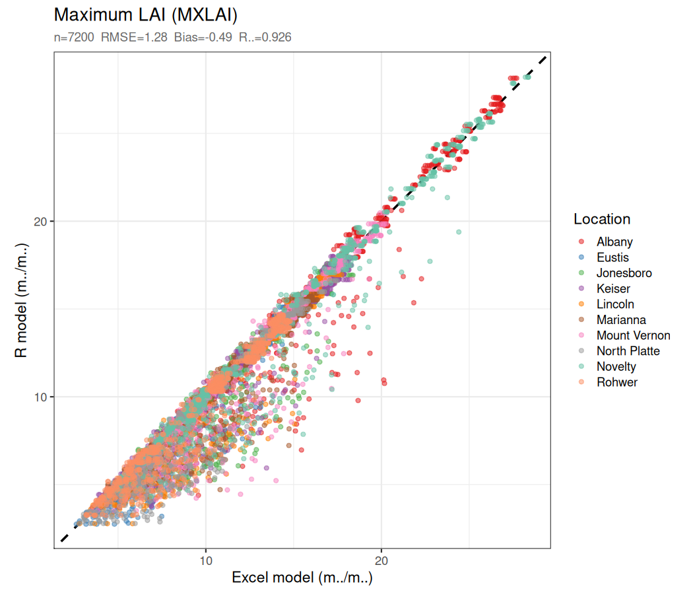
5. Dry Matter Production Sub-Model
Source: 04_dm_production.R
Daily above-ground dry matter production (DDMP, g/m²/d) is calculated
via radiation use efficiency (RUE). Two operating modes are available,
controlled by the vpdtp parameter:
0 = daily mode (simple, no LT trait) and
1 = hourly mode (with limited transpiration trait).
5.1 RUE and CO₂ adjustment
The base radiation use efficiency is adjusted for ambient CO₂ concentration relative to the reference CO₂ when cultivar parameters were measured:
The daily effective RUE is further modified by temperature (TCFRUE, 0–1) and a grain-growth water stress factor (WSFG, 0–1):
PAR interception follows Beer's law:
5.2 Daily mode (vpdtp = 0)
When hourly VPD integration is not needed, daily DM production and transpiration are computed from daily mean values:
where VPDF (VPD fraction, 0.75 typical) accounts for the fraction of the day when VPD is near its daytime maximum, and TEC (transpiration efficiency coefficient, kPa·g/m²/mm) is the intrinsic water-use efficiency of the canopy.
5.3 Limited Transpiration (LT) Trait — Hourly Mode (vpdtp = 1)
VPDcr (kPa), typically 1.5–3.5 kPa.
Standard cultivars have VPDcr set very high (≫ maximum possible VPD)
so the LT reduction never activates.
Because VPD varies greatly throughout the day — rising from near zero at dawn to a maximum in early afternoon — the LT reduction must be integrated at the hourly time step. The model runs an inner loop over all 24 hours of the day, computing radiation, temperature, VPD, DM production, and transpiration for each hour, then sums across daylight hours.
5.3.1 Hourly solar radiation distribution
The distribution of solar radiation across the day follows Spitters (1986). First, the solar geometry for the day is computed from latitude and DOY:
The daily integral of the instantaneous solar elevation factor SINB × (1 + 0.4 × SINB) is pre-computed for normalisation:
+ (12/π) × COSLD × (2 + 3 × 0.4 × SINLD) × √(1 − AOB²)] Eq. 5.13
For each hour H = 1 … 24, the instantaneous sine of solar elevation angle is:
and the hourly PAR-equivalent radiation (MJ/m²/h) is:
The factor 0.48 converts total radiation to PAR (photosynthetically active radiation), consistent with the daily mode. Hours before sunrise (H < SUNRISE) and after sunset (H > SUNSET) have SRADH = 0 and do not contribute to the sum. A twilight correction parameter P = 1.5 h is included in sunrise/sunset calculation:
5.3.2 Hourly temperature curve
The daily temperature curve is constructed using a sinusoidal function that rises from Tmin in the morning to Tmax at midday, then declines toward the next day's Tmin (TMINA) in the afternoon. This asymmetry produces a more realistic temperature trajectory than a symmetric sine.
TminA + (Tmax − TminA) × angleH H > 13.5 (late afternoon/evening) Eq. 5.18
Here TminA is tomorrow's minimum temperature, allowing the afternoon cooling rate to reflect the actual overnight temperature trajectory. This is retrieved from the next row of the weather file before the main loop advances.
# R code — 04_dm_production.R (lines 162–165)
angle <- sin(Pi * (Hv - SUNRIS) / (DAYL + 2*P))
TEMP1v <- ifelse(Hv < 13.5,
TMIN + (TMAX - TMIN) * angle, # morning
TMINA + (TMAX - TMINA) * angle) # afternoon → next-day Tmin5.3.3 Hourly VPD (Boundary Potential Deficit)
Atmospheric vapour pressure at each hour is estimated from the Magnus–Tetens formula (the same equation used throughout the VBA model):
The actual vapour pressure of the air is approximated as VP(Tmin) — the dewpoint approximation (Kimball et al., 1997). Hourly VPD is then:
The term VPDF/0.75 scales the vapour pressure gradient to account for canopy boundary-layer conductance effects. VPDF is a location-specific parameter (typical value 0.75 for humid locations, higher for dry/arid sites). The ratio VPDF/0.75 equals 1.0 when VPDF is at its reference value, leaving VPD unmodified. At drier sites (VPDF > 0.75) the effective VPD driving transpiration is elevated accordingly.
# R code — 04_dm_production.R (lines 156, 171–172)
VPTMIN <- 0.6108 * exp(17.27 * TMIN / (237.3 + TMIN)) # actual VP
VPTEMP1v <- 0.6108 * exp(17.27 * TEMP1v / (237.3 + TEMP1v)) # sat. VP at each hour
VPD1v <- pmax((VPTEMP1v - VPTMIN) * (VPDF / 0.75), 0) # hourly VPD5.3.4 Limited transpiration reduction — the (VPDcr/VPD)² rule
For each daylight hour where VPDH > VPDcr, the LT trait constrains both DM production and transpiration through a quadratic ratio reduction:
The two-step application (which squares the reduction ratio) is a direct replica of the VBA code where the same two lines execute sequentially. The physical interpretation is that the LT trait reduces stomatal conductance (and hence both transpiration and carbon assimilation) in proportion to the excess VPD above VPDcr.
- Without LT: TRH = 0.50 × 4.0 / 9 = 0.222 mm/h
- With LT (step 1): TR₁ = 0.50 × 2.0 / 9 = 0.111 mm/h; DDMP₁ = 0.111 × 9 / 4.0 = 0.250 g/m²/h
- With LT (step 2): TR₂ = 0.250 × 2.0 / 9 = 0.056 mm/h; DDMP₂ = 0.056 × 9 / 4.0 = 0.125 g/m²/h
- Reduction factor = (2.0/4.0)² = 0.25 — both DDMP and TR are 25% of their unrestricted values.
# R code — 04_dm_production.R (lines 175–183)
lt_idx <- daylight & VPD1v > dmp_pars$VPDcr
if (any(lt_idx)) {
VPD1_lt <- VPD1v[lt_idx]; D1 <- DDMP1v[lt_idx]
VPDcr_ <- dmp_pars$VPDcr; TEC_ <- dmp_pars$TEC
# Step 1
T1 <- D1 * VPDcr_ / TEC_; D1 <- T1 * TEC_ / VPD1_lt
# Step 2 (identical lines — squares the ratio)
T1 <- D1 * VPDcr_ / TEC_; D1 <- T1 * TEC_ / VPD1_lt
DDMP1v[lt_idx] <- D1; TR1v[lt_idx] <- T1
}Daily totals are accumulated over daylight hours only:
5.3.5 LT trait parameters and cultivar types
The four cultivar types in the scenarios differ by leaf-area trait
(pden) and, when the LT trait is
active, by VPDcr:
| Cultivar suffix | vpdtp | VPDcr (kPa) | Description |
|---|---|---|---|
| -check | 0 (daily) | — | Standard (no LT trait); daily VPD mode |
| -LT1.5 | 1 (hourly) | 1.5 | LT trait, very responsive (stomata close early) |
| -LT2 | 1 (hourly) | 2.0 | LT trait, moderate |
| -LT2.5 | 1 (hourly) | 2.5 | LT trait, mild (stomata close only at high VPD) |
The check cultivar uses vpdtp=0 (daily
mode), so no hourly loop runs and no LT reduction is applied. The three
LT cultivars all use vpdtp=1, triggering
the 24-hour inner loop.
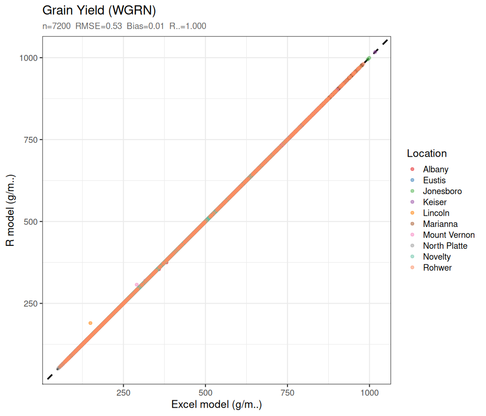
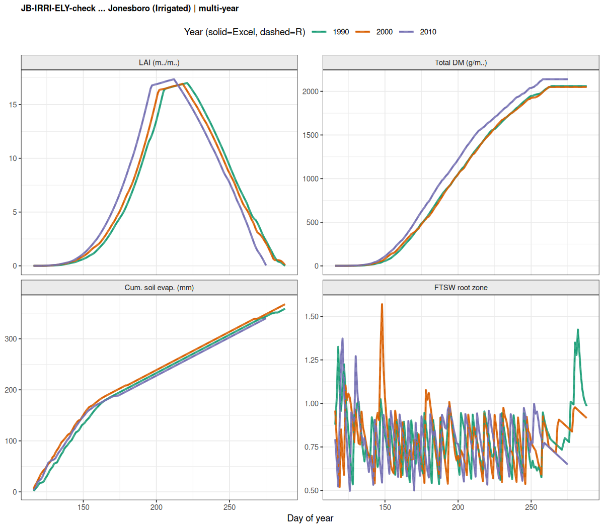
6. Dry Matter Distribution Sub-Model
Source: 05_dm_distribution.R
Daily DM (DDMP) is partitioned between grain and vegetative (leaf + stem) tissues. The grain filling algorithm uses a Dynamic Harvest Index (DHI) approach.
Pre-grain-filling: vegetative growth (EMR → BSG)
Fraction of DM allocated to leaves depends on total biomass WTOP relative to a threshold WTOPL:
Grain-filling (BSG → TSG) — Dynamic HI method
where DHI = PDHI × DHIDMF is the daily harvest index increment rate, and DHIDMF is a modifier (0–1) penalising very low or very high plant biomass at the start of seed growth:
(BSGDM − WDHI1)/(WDHI2 − WDHI1) if WDHI1 < BSGDM < WDHI2
1 if WDHI2 ≤ BSGDM ≤ WDHI3
(WDHI4 − BSGDM)/(WDHI4 − WDHI3) if WDHI3 < BSGDM < WDHI4 Eq. 6.4
DM translocation
When grain demand (SGR/GCC) exceeds current assimilation (DDMP), carbon is mobilised from a pre-set translocatable stem reserve:
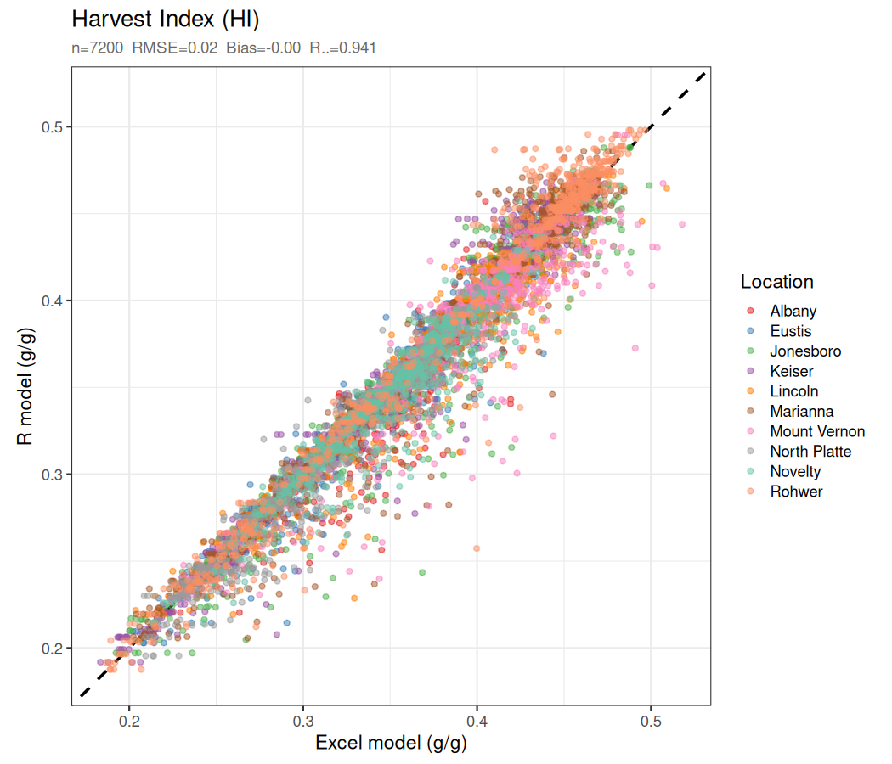
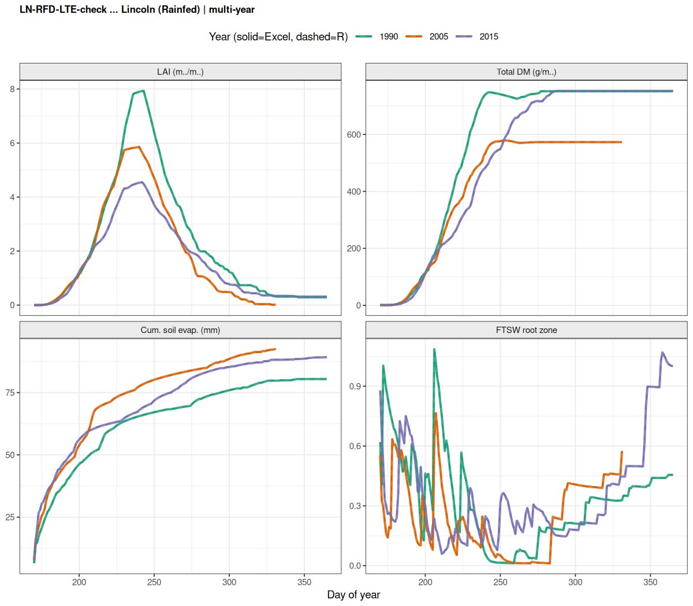
7. Soil Water Balance Sub-Model
Source: 06_soil_water.R
A 10-layer cascading soil water balance updates daily water content in each layer following the sequence: irrigation → rainfall → runoff → soil evaporation → transpiration → drainage.
7.1 Soil initialisation
At the start of each simulation year, all soil layers are reset to
DUL (drained upper limit = field capacity) by the VBA iniSW=0
mechanism. Layer-level available soil water and FTSW are:
where TTSWL = WLULL − WLLLL is the total transpirable soil water in layer L.
7.2 Potential evapotranspiration (PET)
PET is computed using a simplified Priestley–Taylor-type formula driven by solar radiation (EOP) and adjusted for minimum temperature (ETA):
7.3 Soil evaporation — Stage 1 and Stage 2
Soil evaporation depends on FTSWRZ (carried over from the previous day/scenario) and a cumulative evaporation day counter DYSE. Two stages are distinguished:
| Stage | Condition | SEVP formula |
|---|---|---|
| Stage 1 (energy-limited) |
FTSWRZ ≥ 0.5 AND DYSE = 1 AND ATSW[1] > 1 | SEVP = EOS |
| Stage 2 (soil-limited) |
FTSWRZ < 0.5 OR DYSE > 1 OR ATSW[1] ≤ 1 | SEVP = EOS × (√(DYSE+1) − √DYSE) |
The Stage-2 formula is the square-root law (Ritchie 1972): cumulative evaporation in Stage 2 increases as √DYSE, so the daily rate declines. DYSE increments each day in Stage 2 and resets to 1 after sufficient wetting.
7.4 Runoff (rainfed mode, water = 2)
The SCS Curve Number method is used, modified by a soil water extraction ratio (SWER) that accounts for the current wetness of the top soil layers:
7.5 Cascade drainage
Water above DUL in each layer drains to the layer below at a rate controlled by a layer-specific drainage fraction DRAINF:
7.6 Water stress factors
FTSW in the root zone (FTSWRZ = ATSWRZ / TTSWRZ, weighted by rooted layers) drives four stress factors:
Each stress factor has its own threshold parameter (WSSL, WSSG, WSSN). Note WSFL has the lowest threshold (most sensitive to drought), then WSFG. WSFD > 1 shortens the crop cycle under drought.
7.7 Irrigation modes
| water | Mode | Description |
|---|---|---|
| 1 | Auto-irrigated | When FTSWRZ ≤ IRGLVL and CBD between bdSOW and bdTSG, refill
root zone to field capacity: IRGW = TTSWRZ − ATSWRZ |
| 2 | Rainfed | No irrigation; SCS runoff applied when rainfall exceeds retention. |
| 3 | Scheduled | User-specified irrigation schedule (placeholder). |
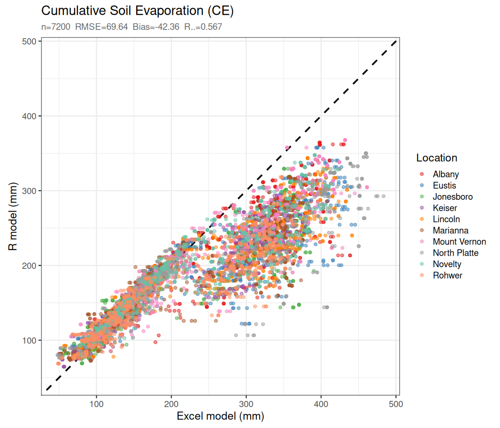
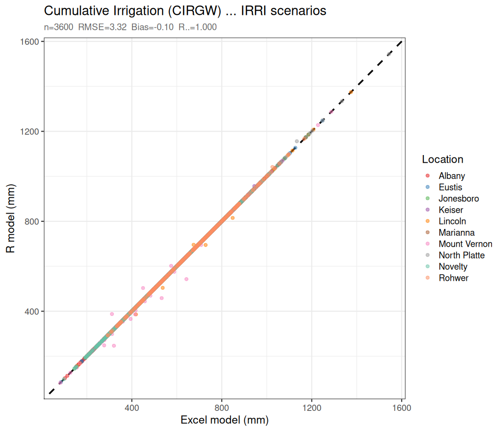
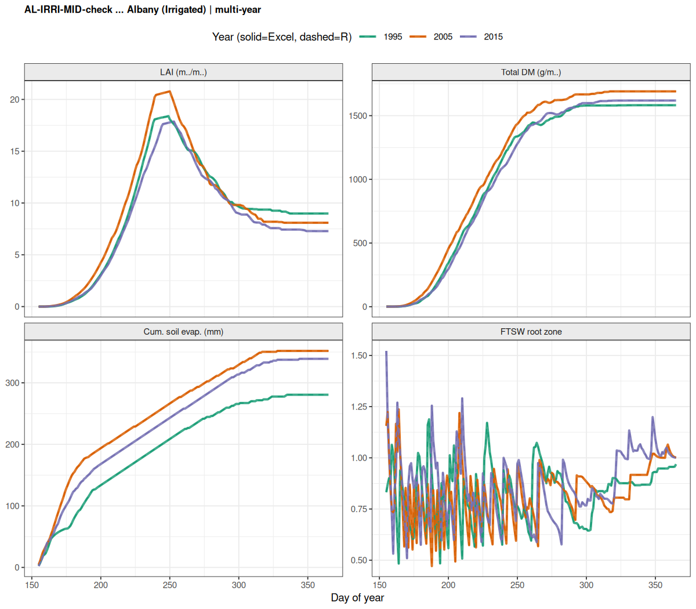
8. Model Integration and Batch Runner
Sources: 07_ssm_model.R, 08_run_model.R
run_ssm_year() — single scenario-year
The function run_ssm_year(scn, wth, soil,
year, init_ftswrz) runs one scenario for one calendar year.
It initialises all sub-models, advances the sowing-day soil water step,
then iterates the main daily loop until maturity. The function returns
a list containing the annual summary row and the final FTSWRZ.
run_all_scenarios() — full batch
All 240 scenarios × 30 years are processed in strict CSV row order.
A single global_ftswrz scalar threads
through every scenario-year, initialised to 0 before the very first row:
# 08_run_model.R (key loop structure)
global_ftswrz <- 0 # VBA Double default
for (i in seq_len(nrow(scn_table))) {
scn <- as.list(scn_table[i, ])
for (yr in seq(start_year, start_year + n_years - 1)) {
result <- run_ssm_year(scn, wth, soil, yr,
init_ftswrz = global_ftswrz)
global_ftswrz <- result$final_ftswrz # carry forward
}
}Maturity types (MATYP)
| MATYP | Meaning |
|---|---|
| 1 | Normal maturity (CBD > bdMAT) |
| 2 | Pre-mature senescence (LAI < 0.05 during seed fill) |
| 4 | Stopped at StopDoy (end of simulation window) |
| 5 | Flood kill (FLDUR > FLDKIL) |
9. Key Parameter Tables
Crop parameters (genetic)
| Parameter | Description | Units | MG-IV default |
|---|---|---|---|
| PHYL | Phyllochron (thermal time per node) | °C·d | 45 |
| PLACON | Leaf area coefficient | cm²/plant | 1.016 |
| PLAPOW | Leaf area exponent | — | 2.5 |
| SLA | Specific leaf area | m²/g | 0.032 |
| KPAR | Light extinction coefficient | — | 0.65 |
| IRUE | Radiation use efficiency (base) | g/MJ PAR | 2.0 |
| TECREF | Transpiration efficiency (reference CO₂) | kPa·g/m²/mm | 9.0 |
| vpdtp | VPD mode (0=daily, 1=hourly LT) | — | 0 |
| VPDcr | Critical VPD for LT trait | kPa | 1.5 / 2.0 / 2.5 |
| PDHI | Potential daily HI increment | g/g/d | 0.01 |
| GCC | Grain construction cost | — | 0.7 |
| FRTRL | Fraction of BSGDM translocatable | — | 0.22 |
| cpp / ppsen | Critical photoperiod / sensitivity | h / h⁻¹ | 13.09 / −0.294 |
Management parameters
| Parameter | Description | Value in IRRI | Value in RFD |
|---|---|---|---|
| pdoy | Planting day of year | ELY=115, MID=133, LTE=164 | same |
| pden | Plant density | 32 plants/m² | 32 plants/m² |
| water | Water management mode | 1 (auto-irrigated) | 2 (rainfed) |
| irglvl | FTSWRZ irrigation trigger | 0.60 | — (unused) |
Soil parameters (per layer)
| Parameter | Description | Units |
|---|---|---|
| DLYER | Layer thickness | mm |
| SAT | Saturated water content | mm/mm |
| DUL | Drained upper limit (field capacity) | mm/mm |
| CLL | Crop lower limit (wilting point) | mm/mm |
| ADRY | Air-dry water content | mm/mm |
| DRAINF | Drainage fraction (fraction above DUL that drains per day) | d⁻¹ |
| SALB | Soil albedo (affects PET) | — |
| CN2 | SCS curve number at field capacity | — |
10. Validation Against Excel Reference
The R model was validated against the original Excel/VBA model across all 7 200 simulation years (240 scenarios × 30 years, 10 locations). Three bugs had to be fixed to achieve agreement:
- FTSWRZ chain carry-over — replaced per-scenario warm-up years with a single global scalar in CSV row order.
- IRGLVL data error — corrected scenarios.csv from 0.5 to 0.6 for all 120 IRRI scenarios.
- CE reset at DAP=1 — added VBA-equivalent reset of CE/CTR/CRAIN/CRUNOF/CDRAIN to 0 at the first growth day.
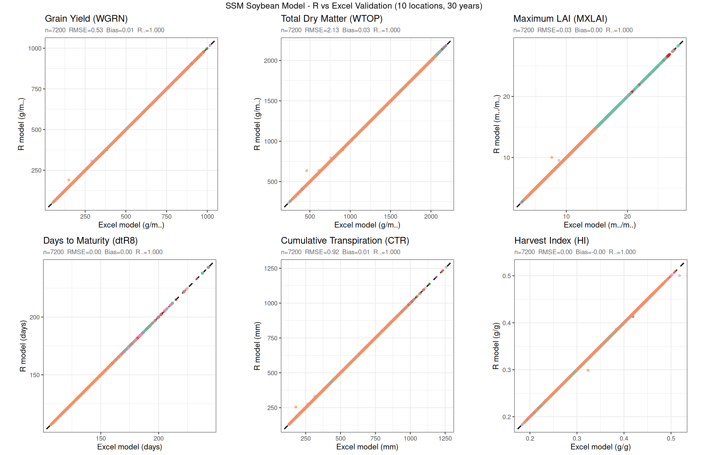
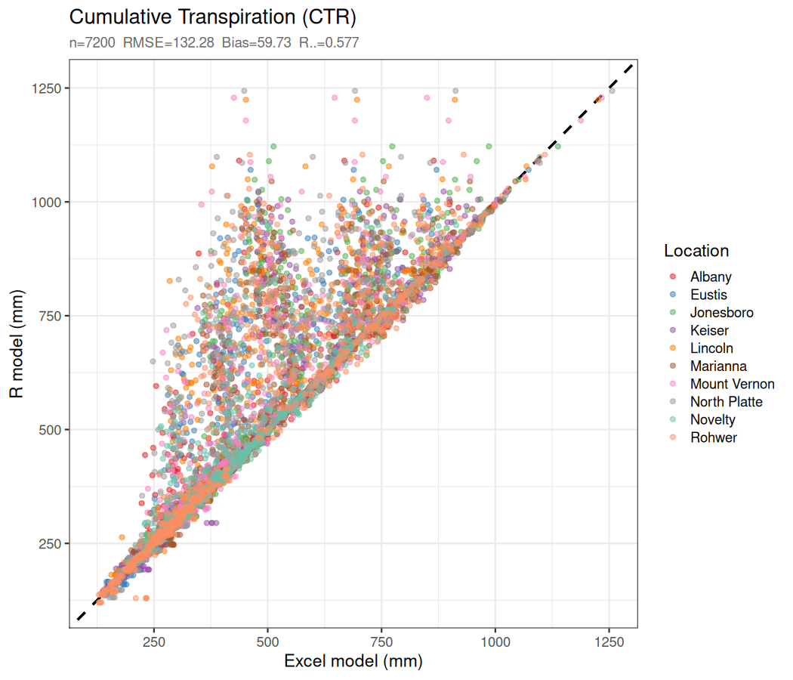
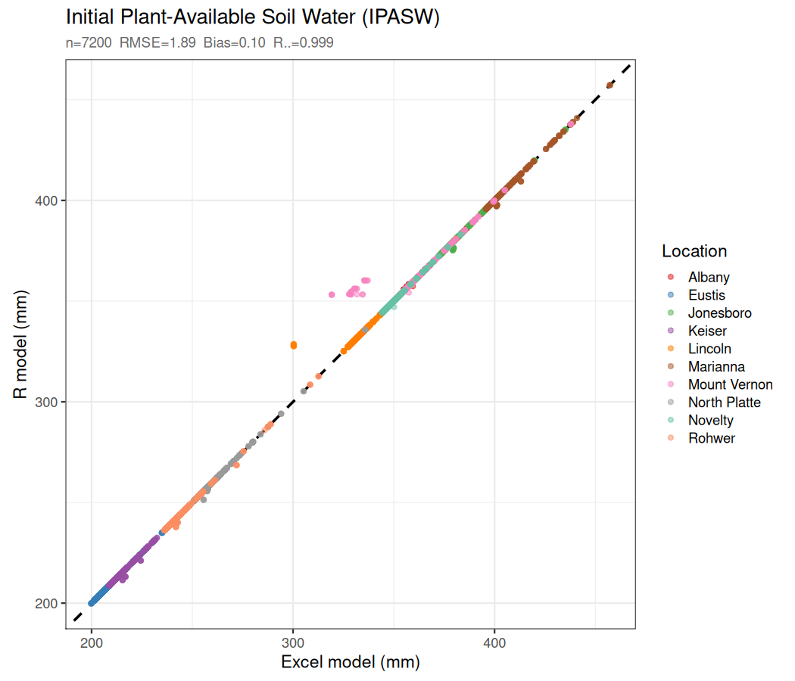
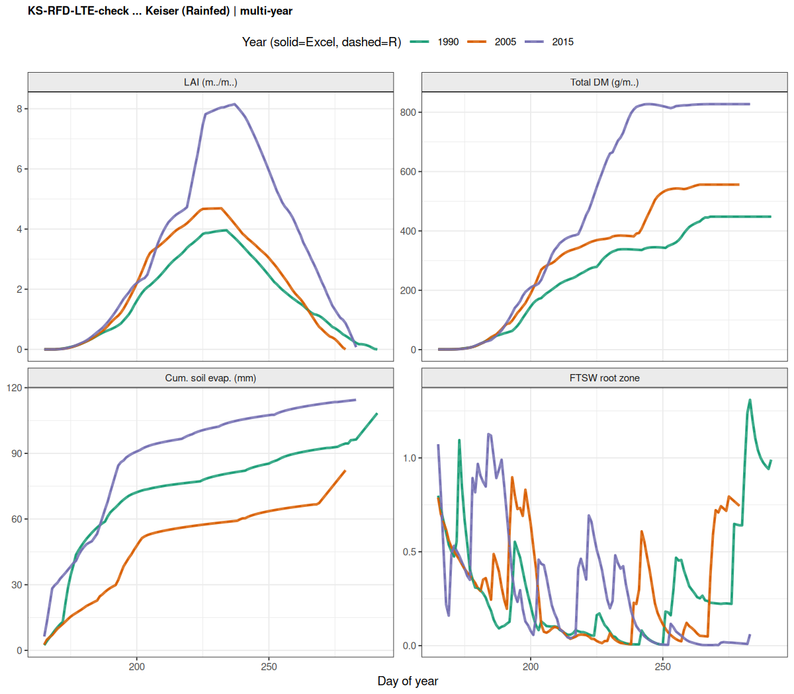
SSM Soybean R Model — Documentation generated June 2026 | Based on Soltani & Sinclair (2012) | Validated against original Excel/VBA reference model